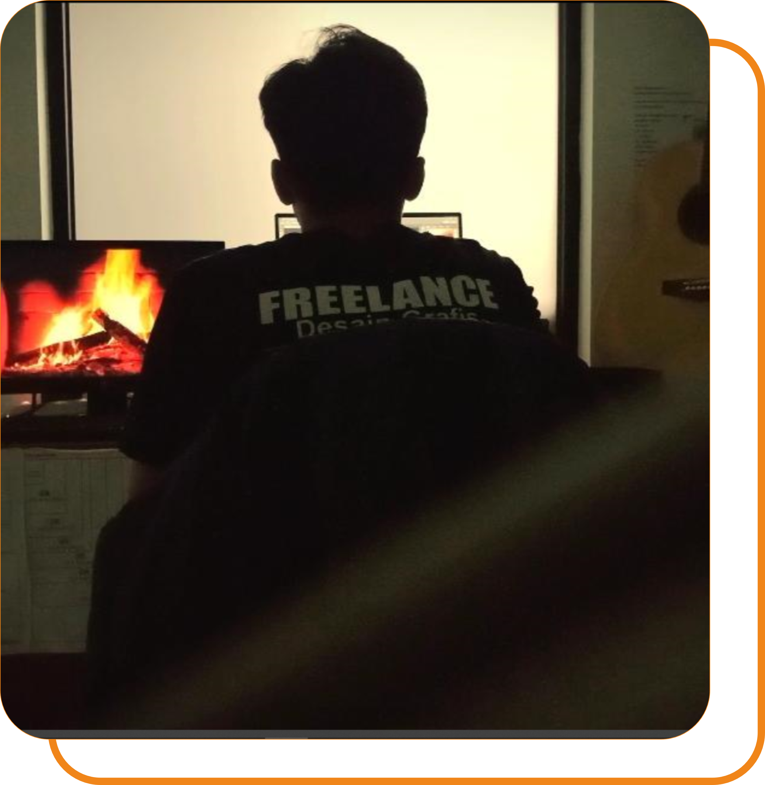

<section id="skills" class="py-20 container max-w-screen-xl mx-auto px-8">
  <h3 class="text-3xl font-bold mb-12 text-emerald-400 text-center">Skills</h3>
  <div class="grid md:grid-cols-2 gap-12 items-center">
    <div>
      <div class="mb-4"><div class="flex justify-between mb-1"><span>Illustration</span><span>90%</span></div><div class="w-full bg-gray-700 h-2 rounded"><div class="bg-emerald-400 h-2 rounded" style="width:90%"></div></div></div>
      <div class="mb-4"><div class="flex justify-between mb-1"><span>Drawing/Foto/Video</span><span>95%</span></div><div class="w-full bg-gray-700 h-2 rounded"><div class="bg-emerald-400 h-2 rounded" style="width:95%"></div></div></div>
      <div class="mb-4"><div class="flex justify-between mb-1"><span>UI/UX</span><span>85%</span></div><div class="w-full bg-gray-700 h-2 rounded"><div class="bg-emerald-400 h-2 rounded" style="width:85%"></div></div></div>
      <div class="mb-4"><div class="flex justify-between mb-1"><span>Corel Draw</span><span>85%</span></div><div class="w-full bg-gray-700 h-2 rounded"><div class="bg-emerald-400 h-2 rounded" style="width:85%"></div></div></div>
      <div class="mb-4"><div class="flex justify-between mb-1"><span>Photoshop</span><span>75%</span></div><div class="w-full bg-gray-700 h-2 rounded"><div class="bg-emerald-400 h-2 rounded" style="width:75%"></div></div></div>
      <div class="mb-4"><div class="flex justify-between mb-1"><span>Adobe Premiere & After Effects</span><span>65%</span></div><div class="w-full bg-gray-700 h-2 rounded"><div class="bg-emerald-400 h-2 rounded" style="width:65%"></div></div></div>
    </div>
    <div class="flex justify-center">
      
    </div>
  </div>
</section>
